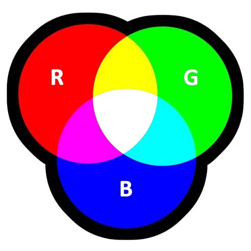

RGB staat voor Rood, Groen en Blauw. Dit kleurmodel wordt gebruikt bij beeldschermen van computers.
Het werkt met licht op een zwarte achtergrond. Als alle kleuren uitstaan, zie je zwart. Als alle kleuren aan staan, zie je wit.

RGB staat voor Rood, Groen en Blauw en wordt gebruikt bij beeldschermen van computers. Het werkt met licht en een zwarte achtergrond.
Beeldschermen bestaan uit pixels. In deze pixels zitten kleine lampjes die de drie kleuren in verschillende sterktes mengen om allerlei kleuren te maken.
Als alle kleuren uitstaan, zie je zwart. Als ze allemaal aan staan, zie je wit. Dat komt doordat de kleuren licht mengen.
CMYK staat voor Cyaan, Magenta, Yellow en Key (zwart) en wordt gebruikt bij printers. Het werkt met inkt op een witte achtergrond, bijvoorbeeld papier.
De kleuren worden gemengd door licht weg te nemen van het papier. Omdat Cyaan, Magenta en Geel samen geen perfect zwart geven, is er extra zwarte inkt (K) toegevoegd.
Omdat licht en inkt kleuren anders mengen. Zo zien kleuren op een scherm er anders uit dan wanneer ze worden geprint.
CMYK wordt gebruikt bij printers. De kleuren worden gemaakt met inkt op wit papier.
De K staat voor zwart. Deze kleur zorgt ervoor dat donkere delen duidelijker worden afgedrukt.